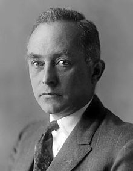
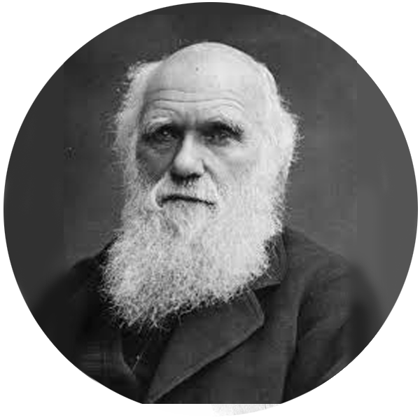

Murió: 14 de Marzo de 2018, Cambridge, Reino Unido
Premios: Medalla Copley , Medalla Presidencial de la Libertad
Max Born

Físico, Matemático
Nacido: 11 de Diciembre de 1882 Breslau, Polonia
Murió: 5 de Enero de 1970 Göttingen, Alemania
Premios: Premio Nobel de Física (1954), Medalla Hughes (1950), Medalla Max Planck (1948)
Charles Darwin

Naturalista, Biólogo
Nacido: 12 de Febrero de 1809, Shrewsbury, Reino Unido
Murió: 19 de Abril 1882, Downe, Reino Unido
Premios: Medalla Real (1853), Medalla Wollaston (1859), Medalla Copley (1864)
Mientras cursaba su doctorado se casó con Jane Wayline (1965), con quien tendría tres hijos. Tras casi veinticinco años de vida en común, en 1990 la pareja se separó y el científico se fue a vivir con Elaine Mason, una de las enfermeras que lo cuidaba y con la que cinco años más tarde contrajo matrimonio; esta segunda relación se prolongaría hasta 2007. Después de obtener el título de doctor en física teórica (1966), su pasión por el estudio del origen del universo fue en aumento, y sus investigaciones se centraron en el campo de la relatividad general, particularmente en la física de los agujeros negros, descrita por primera vez por Robert Oppenheimer en 1939.
Ciertamente, Hawking no sólo es comparable con Albert Einstein por su popularidad: al igual que el formulador de la teoría de la relatividad, Stephen Hawking se planteó la ambiciosa meta de armonizar la relatividad general y la mecánica cuántica, en busca de una unificación de la física que permitiese dar cuenta tanto del universo como de los fenómenos subatómicos. En 1971 sugirió la formación, a continuación del big bang, de numerosos objetos denominados «miniagujeros negros», que contendrían alrededor de mil millones de toneladas métricas de masa, pero ocuparían sólo el espacio de un protón, circunstancia que originaría enormes campos gravitatorios, regidos por las leyes de la relatividad.
Llevó a cabo importantes investigaciones sobre dinámica de las estructuras reticulares cristalinas (Dynamik der Kristallgitter, 1915) y acerca de la teoría de la relatividad (Die Relativitätstheorie, 1923), y estableció una esencial clarificación crítica de la mecánica cuántica (Atommechanik, 1925; Atomdynamik, 1926 y Física atomica, 1935). En 1933, con el ascenso al poder del nazismo, Max Born fue desposeído de la cátedra por su condición de judío. Emigró entonces al Reino Unido, adoptó la nacionalidad británica y ejerció la docencia en Cambridge y, desde 1936 hasta 1953, en Edimburgo.
Darwin notando las similitudes entre las especies de todo el mundo, junto con variaciones basadas en lugares específicos, lo llevó a creer que habían evolucionado gradualmente a partir de ancestros comunes. Llegó a creer que las especies sobrevivieron a través de un proceso llamado “selección natural”, donde las especies que se adaptan con éxito para satisfacer las necesidades cambiantes de su hábitat natural prosperaron, mientras que los que no pudieron desarrollarse y reproducirse murieron.
En 1858, después de años de investigación científica profunda, Darwin presentó públicamente su revolucionaria teoría de la evolución en una reunión de la Linnean Society. El 24 de noviembre de 1859, publicó una explicación detallada de su teoría en su obra más conocida, El origen de las especies por medio de la selección natural.